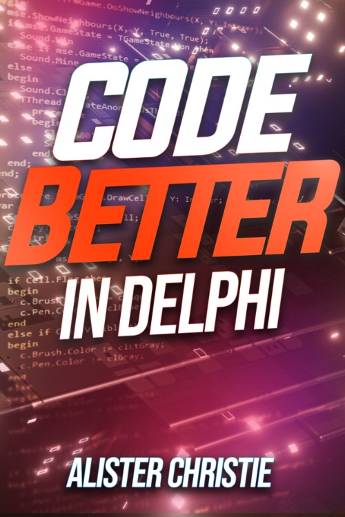

Code better in Delphi
Writed by : Alister Christie
Published date : 10/07/2023
Language :  English
English
Web site : https://learndelphi.tv/codebetter
About Code better in Delphi
It’s back, it’s bigger, it’s better, it’s the sequel to Alsiter Christie's previous book, it’s Code Better in Delphi.
After my last book, you can write code much faster, but without the skills to write code better, you might just end up being a highly efficient spaghetti coding machine. So stop writing that tightly coupled singleton full of duplicated code, and start reading this book.
This time, rather than looking at how fast and productive you can be, we look at quality and maintainability.
In this book, you’ll be introduced to a variety of ways you can make your code better
How DRY is that code you just wrote?
Is that class SOLID or crumblier than a very crumbly cookie?
Will Refactoring improve the quality of your code?
Are you reinventing the wheel, or should you use try Patterns?
Will testing drive you mad?
Are your bugs buggier than a giraffe stage beetle?
Do you have a handle on those dependencies?
Are your versions under control?
What to do before disaster strikes or the zombie horde arrives?
Are you Agile, or are you about to go over a waterfall?
How do you calculate the Bus number for your project?
Find out the answer to these and many more questions in this book.
But wait, there’s more…
Plugins and Tools that
Find areas of your code that might need improving.
Tell you about Complex areas of code you can simplify.
Where you are making common coding mistakes.
Help remove redundancy and orphaned code.
Let you know when code is leaker than a knitted canoe.
Automate your testing
Where to buy ?
If this book is still available for sale, you probably can order it on its website.
Table of content
- Copyright 1
- Table of Contents 1
- Dedication 8
- Foreword 9
- Preface 15
- Acknowledgements 15
- Introduction 16
- Conventions Used in this Book 17
- Scope 17
- More Information 17
- Code Samples 17
- Sections in this Book 18
- begin 18
- Make Code Maintainable 18
- The Enterprise Development Merry-Go-Round 19
- Write Code for Maintainability 21
- Write Code for Scalability 21
- Write Code for Reliability 22
- PART ONE - CODE 23
- Small Coding Tips 24
- Evil Comments 24
- Don’t Leave Commented-Out Code in Your Application 25
- Make Your Code More Stylish 26
- Let CTRL+D Be Your Friend 26
- Use a Good Naming Convention 28
- Stop Prefixing Variables with Their Type 29
- Variables are Nouns, Methods Verbs 29
- Parameters 30
- Parameter Overload 30
- Parameter Sets 31
- By Reference or By Value 32
- Side Effects 32
- Method Length - Size Really IS Important 34
- Ditch With 34
- FreeAndNil 36
- Global State 36
- Inject Your Dependencies 36
- Further Learning 38
- Evil Comments 24
- DRY Your Code 38
- When Not to DRY Your Code 39
- WET Code 39
- Use SOLID Code 39
- Single Responsibility 40
- Open-Closed 40
- Liskov Substitution 42
- Interface Segregation 43
- Dependency Inversion 43
- Further Learning 45
- Use the Law of Demeter 45
- Refactoring 46
- What is “refactoring”? 46
- Malodourous Source 47
- Further Learning 47
- Specific Refactorings 47
- Re-ordering Statements 47
- Rename Refactoring 47
- Automated Refactorings 49
- Extract Method 49
- Extract Method Object 51
- Split With 53
- Introduce Explaining Variable 54
- Summary 57
- Further Learning 57
- Design Patterns 57
- The Observer Pattern 58
- Anti-Patterns 65
- Redundant Code 66
- Language Features 66
- Bad Exception Blocks 66
- Use Guard Clauses Properly 67
- Premature Optimisation 68
- Architecture 68
- Further Learning 68
- PART TWO - THE RIGHT TOOL 70
- The Delphi IDE 71
- Hints and Warnings 71
- Have a Zero Hints and Warnings Policy 72
- Further Learning 73
- Audits and Metrics 73
- Toxicity Metrics 77
- Help Insight 77
- Hints and Warnings 71
- Third-Party Tools 81
- External Tools 81
- Source Monitor 81
- Pascal Analyzer 84
- Libraries 87
- FastMM4 87
- Leak Detection 87
- Double Free 92
- Using a Freed Object 94
- Limit Usage to Debugging 95
- FastMM4 87
- IDE Plugins 96
- Pascal Expert 96
- FixInsight 97
- Beyond Compare 99
- TestInsight 101
- Model Maker Code Explorer 107
- Other Plugins 108
- External Tools 81
- PART THREE - WORKING WITH CODE 110
- Testing Your Application 111
- Types of Testing 111
- Functional Testing 111
- Integration Testing 112
- Types of Testing 111
- What are Unit Tests? 113
- Test-Driven Development 113
- What is Test-Driven Development? 113
- Bowling Score Kata 114
- What’s a Kata? 114
- What is a Coding Kata? 115
- Bowling Score Kata 115
- How to Score Ten-Pin Bowling 116
- And the Kata Begins… 116
- About the project 117
- The unit tests 117
- Gui Runner 129
- Further Learning 131
- Debugging 131
- Debugging Basics 132
- BreakPoints 132
- Baby-Steps 133
- Instruction Pointer 135
- More Advanced Breakpoints 135
- Breakpoint Window 137
- Local Variables 137
- Call Stack 139
- Watch List 140
- Debug Inspector 143
- Evaluate/Modify 145
- Threads 146
- Modules 148
- CPU Windows 149
- Using the Debugger: 150
- Simultaneous Debugging 151
- Work Out the Pass Count 151
- Extreme Side Effects 152
- Fantastic Bugs and Where to Find Them 154
- Logging 155
- Platform Assistant 156
- Writing Code to Make Debugging Easier 156
- Test Your Bugs 157
- Further Learning 157
- Debugging Basics 132
- Removing Dependencies 157
- Dependencies Between units. 157
- Dependencies Between Classes 158
- Dependency Injection 158
- Three Types of Dependency Injection 159
- Constructor Injection 160
- Property Injection 161
- Method Injection 162
- Interface Injection 162
- Further Learning 163
- Three Types of Dependency Injection 159
- Cleaning Up Uses Clauses 163
- cnWizards Uses Cleaner 164
- Pascal Analyser Usage Report 167
- Orphaned Code 169
- Removing Public Methods and Globals 170
- Pascal Analyzer Code Reduction Report 173
- Logging Example 173
- Remove Global Variable by Constructor Injection 177
- Create an Interface 178
- A New Logger 180
- Multiple Loggers - Polymorphism to the Rescue 184
- Method Logging Made Simple 185
- Final Notes 188
- Further Learning 188
- Settings Example 189
- TVirtualInterface to the Rescue 190
- Descending from TVirtualInterface 191
- Introducing Attributes 196
- Further Learning 198
- Working on Legacy Projects 198
- Further Learning 200
- PART FOUR - BEYOND DELPHI 201
- Version Control 202
- What is version control? 202
- Repository 202
- Update 202
- Merge 202
- Commit 203
- Branch 203
- Subversion 203
- SVN Tutorial 204
- Install a Server 204
- Install the Client 204
- Using SVN 204
- Checking Our Code In 207
- Making Our Second Commit 209
- Going Back to a Previous Version 210
- Diff 211
- SVN in Delphi 212
- Subversion in the Cloud 215
- Further Learning 215
- Git 215
- Configuring Git 216
- Git Tutorial 216
- Some Other Handy Hints 218
- Further Learning 219
- Bug / Issue / Ticket Tracking Systems 219
- Working in Teams 219
- What’s the Bus Number for Your Project 220
- Have a Successor 220
- Getting Along in a Team 221
- Outsourcing 221
- Team Scalability 221
- Peer Review 222
- Pair Programming 222
- What’s the Bus Number for Your Project 220
- Methodology, Process, and Project Management 223
- Waterfall 223
- Agile 224
- Sprints 226
- Team Size 226
- Stand-Ups 226
- Kanban Board 226
- Scrum 227
- Further Learning 227
- Lean 228
- Further Learning 228
- DevOps 228
- Infrastructure as Code 229
- Containerisation 229
- Continuous Integration 229
- Continuous Delivery 230
- Further Learning 230
- Preparing for Disaster 230
- Backups 231
- Virtual Machines 233
- What if Something Happens to You 233
- Other Options 233
- Zombie Apocalypse 233
- Further Learning 234
- finalization 234
- end. 235